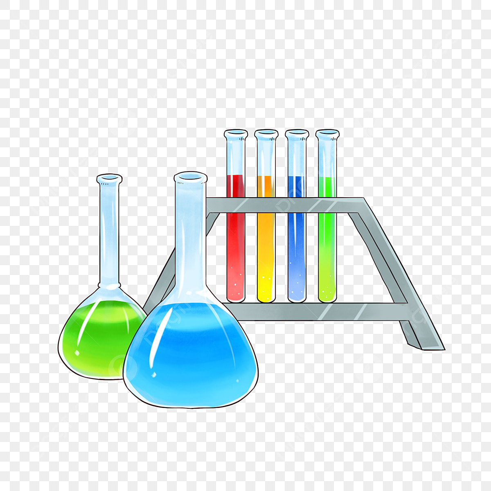

Laboratories
projects
training

Always in Quarto-Markdown format and code in GitHub repositories or Organitzations.
Deliveries via github:
| Code | Date | Description |
|---|---|---|
| MF01-0491 | 12/12/2022 | Front-end |
| UF01-1841 | 13/01/2023 | Prototip WebApp Quarto: web multipage, markdwon/HTML, with github repository and gh-pages deployement |
| UF02-1842 | 10/02/2023 | WebApp Quarto amb advanced features: markdown basics, figures, tables, Mermaid Diagrams, callout, cross-references, code highlighted |
| UF03-1843 | 20/02/2023 | WebApp Quarto amb Document Listings |
| MF01-0492 | 21/02/2023 | Prova objectiva i prova pràctica - WebApp Quarto amb Api REST call to server and render the data from JSON, from cloud-external server or Spring Boot local server - WebApp Quarto amb a Observable JS script cell |
| MF02-0492 | 21/02/2022 | Back-end |
| UF01-1844 | 20/03/2023 | Laboratori app MVC amb Spring Boot Thyemeleaf (alternatiu Rest) un objecte amb totes les operacions CRUD |
| UF02-1845 | 19/04/2023 | Laboratori app Spring Boot Thyemeleaf (opcional Rest) amb H2 JPA (alternatiu objectes amb Composition/Inherence) |
| UF03-1846 | 09/05/2023 | Laboratori app web amb React Hooks |
| MF02-0492 | 10/05/2023 | Prova objectiva i prova pràctica (triar una opció) - Laboratori app Spring Boot amb React - Laboratori Spring Boot Server-Data API Rest amb Spring Boot Client-Web-Thymeleaf - Laboratori app Spring Boot Thynmeleaf deployat a AWS - Laboratori app web amb React Hooks amb Data API Rest |
| MF03-0493 | 10/05/2022 | Project |
| UF01 | 08/06/2023 | Crear app web CRUD amb db en servidor remot Spring Boot i gestió de dades amb API fetch (opcional altres tech) JS React |
| MF03-0493 | 08/06/2023 | Prova objectiva i prova pràctica |